Day-2: Create a new Organization
|
New organizations are created from the |
There are two ways to create a new Organization, which will be described below in the following sections:
-
Automatically: A Job Template to create all the required components for a new regular organization is provided.
-
Manually: All the required components for a new regular organization are created step-by-step.
As an overview, when creating a new Organization, some objects must be populated at the superadmin organization, such as the organization itself, the corresponding CasC Job Templates, the user to be the future organization admin and the roles to give that user the admin privileges to the organization. A new Git Repository is needed for the new Organization as well.
-
Locate the Job Template called
<ORGNAME> dev WF New Projectand Launch it.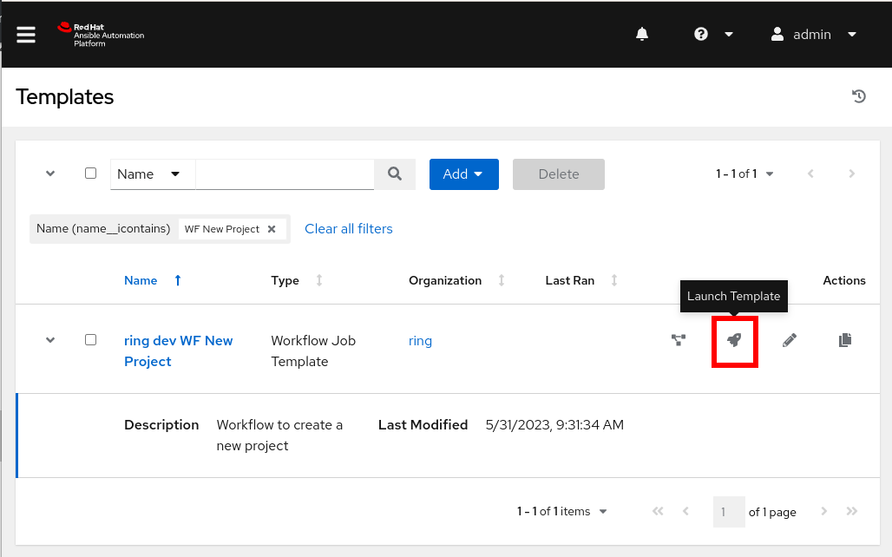 -
Fill in all the required information and Start the Job:
The fields
Name for the new OrganizationandGitLab Projectmust have the same value.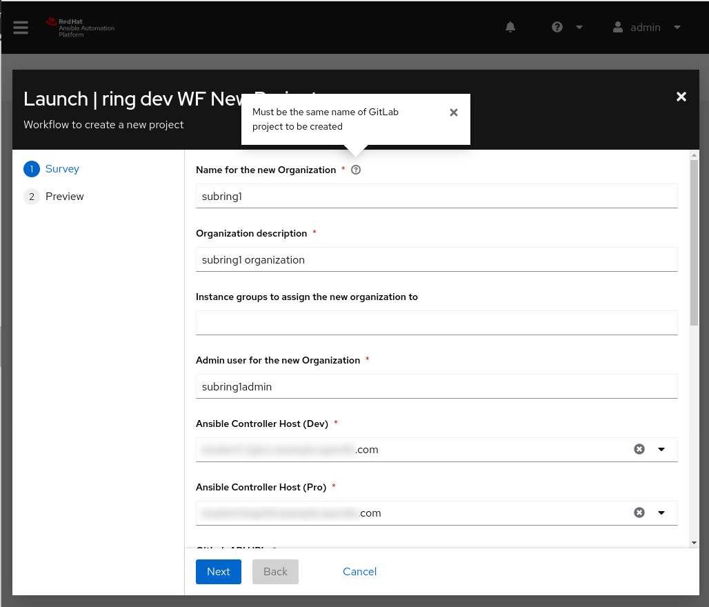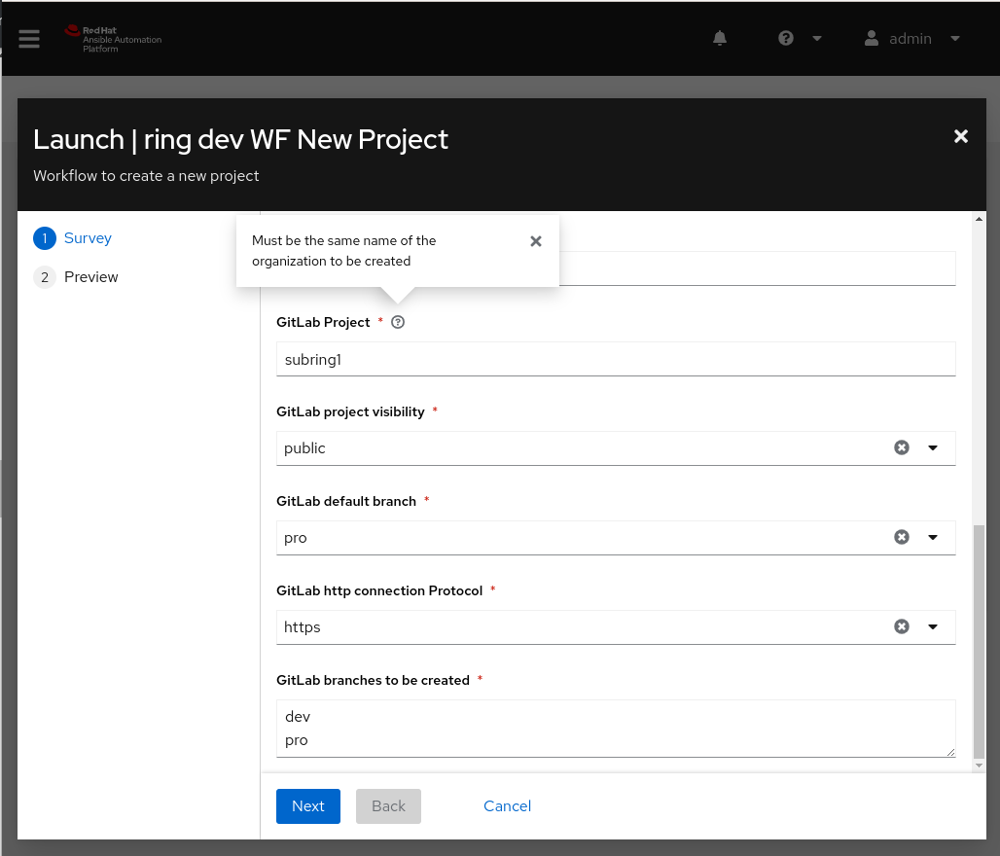 -
Let’s the execution to finish:
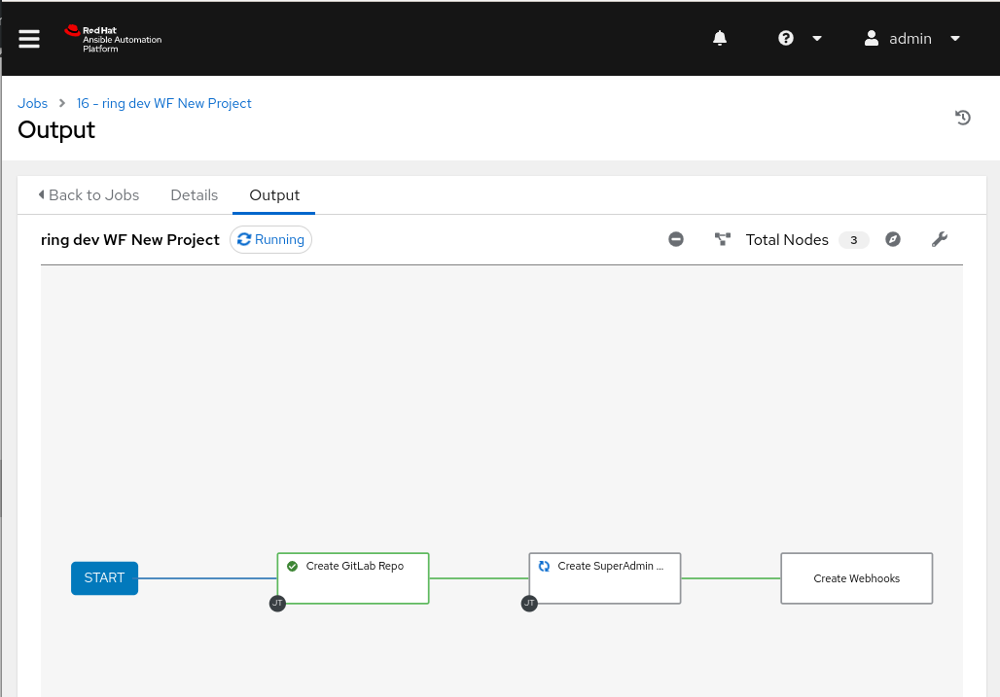At this point, the new GitLab repository has been created and the Webhook for the
DEVworkflow has been created.The Webhook for the
PROworkflow has to be created manually, following the steps described at Configure the GitLab Webhooks for the Pro environment AFTER promoting the new organization to thePROenvironment. -
Promote the new organization to PRO
4.1 Create a Merge Request to promote the
devbranch to theprobranch: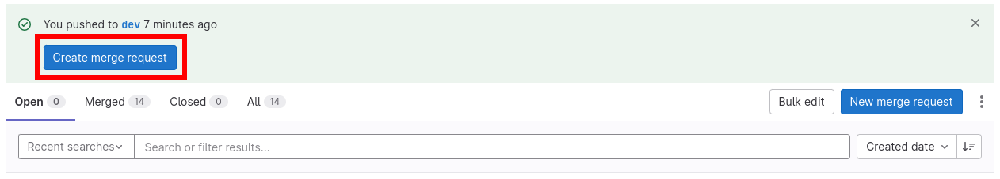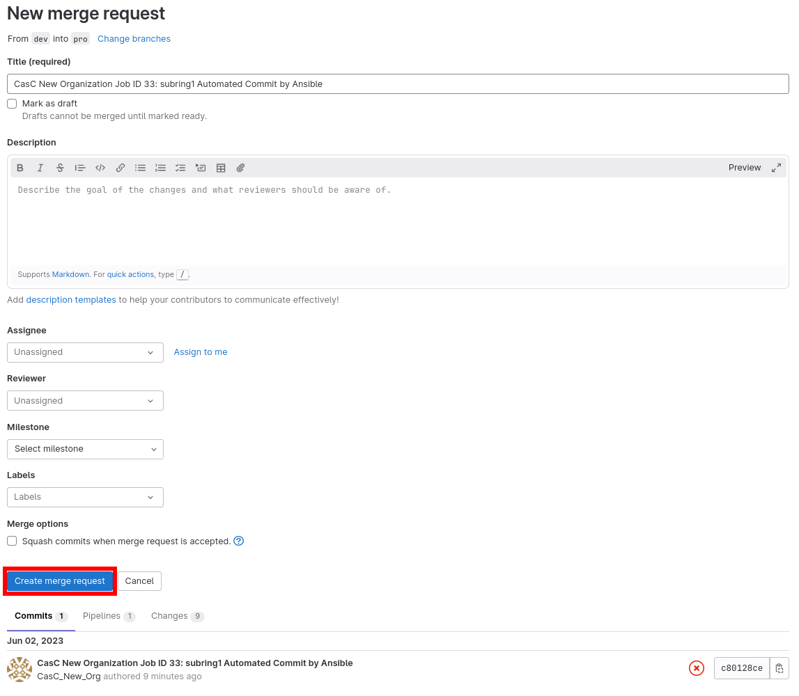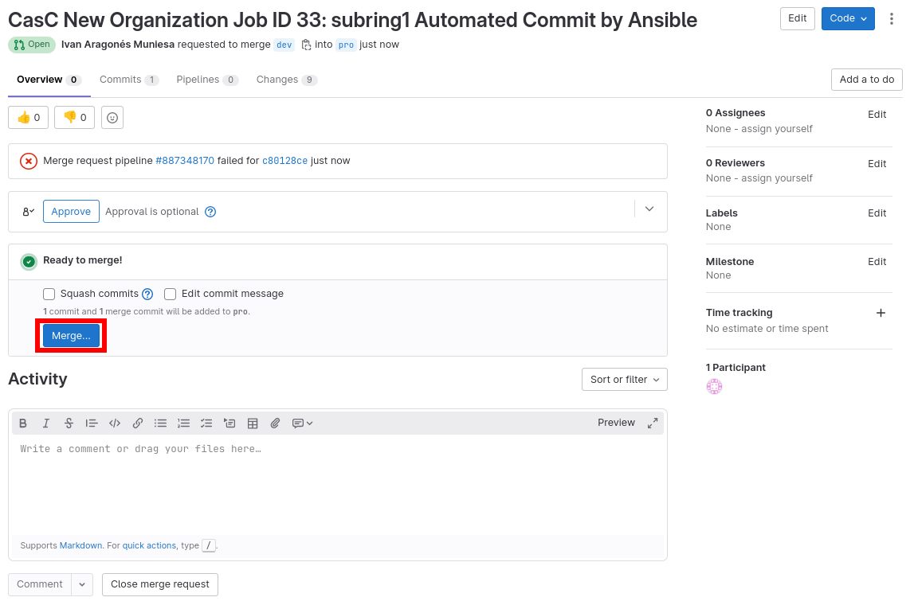4.2 Create a Tag at the
probranch to deploy the new Organization:In some cases, the GitLab.com pipelines only work if GitLab.com account used have registered the information of a valid Credit Card.
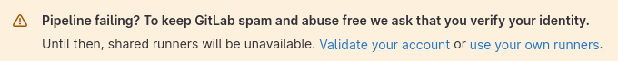If it’s not the case, the pipeline that is automatically creating the Tag just after merging the Merge Request, will not work and the tag will not be generated automatically, so it’s needed to generate it manually:
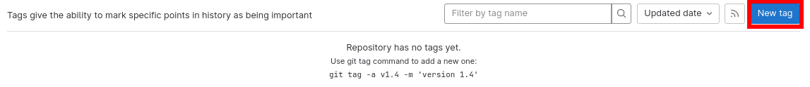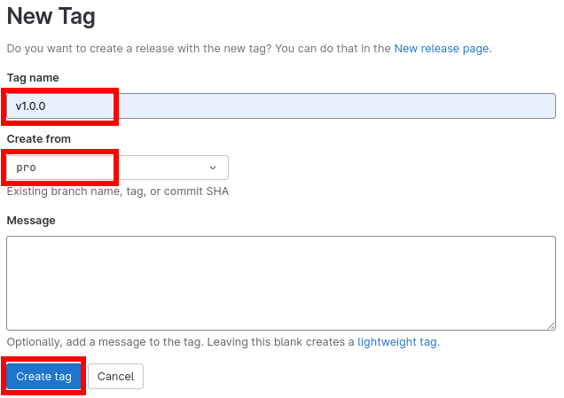 -
Create the Webhook for the
PROworkflow following the steps described at Configure the GitLab Webhooks for the Pro environment.
|
To create the new objects, a new git branch is needed, as the branches used to deploy the CasC to the different environments are protected, doesn’t accept direct pushes and only accept merges through Pull Requests. |
|
Make sure that the required environment variables are properly set. See the Export all the variables to be used in the next steps |
-
Run the playbook to create the new organization objects
These new objects can be created manually without any problem, but a playbook is provided to make this easier. It must be executed from the command line (PR are welcome), and is creating all the files with the new objects for us, except the one for the organization’s admin user.
To create the new objects, just run the following command:
ansible-playbook new_project.yml -e "{organization_name: ${SUPERADMIN_ORG}, organization_desc: '${SUPERADMIN_ORG} Organization', instance_groups: [MADRID], admin_user: 'neworgadminuser', orgs_vars: 'orgs_vars', orgs: '${SUPERADMIN_ORG}', env: dev, casc_gitlab_scm_branch: dev} -e@gitlab.credentials.yaml"See the output
[WARNING]: provided hosts list is empty, only localhost is available. Note that the implicit localhost does not match 'all' PLAY [localhost] ***************************************************************************************************************************************************************************************************************************** TASK [Assert that the required input variables are defined] ********************************************************************************************************************************************************************************** ok: [localhost] => (item=Check the required variable organization_name is defined) ok: [localhost] => (item=Check the required variable organization_desc is defined) ok: [localhost] => (item=Check the required variable instance_groups is defined) ok: [localhost] => (item=Check the required variable admin_user is defined) TASK [Create all the required objects] ******************************************************************************************************************************************************************************************************* changed: [localhost] => (item=Creating the file orgs_vars/sadm/env/common/controller_organizations.d/NewOrg.yml) changed: [localhost] => (item=Creating the file orgs_vars/sadm/env/common/controller_projects.d/NewOrg_casc.yml) changed: [localhost] => (item=Creating the file orgs_vars/sadm/env/common/controller_job_templates.d/NewOrg_casc.yml) changed: [localhost] => (item=Creating the file orgs_vars/sadm/env/dev/controller_credentials.d/NewOrg_casc.yml) changed: [localhost] => (item=Creating the file orgs_vars/sadm/env/common/controller_roles.d/NewOrg.yml) TASK [Show manual steps] ********************************************************************************************************************************************************************************************************************* ok: [localhost] => { "msg": [ "Remember to:", " - Add the user neworgadminuser manually at orgs_vars/sadm/env/dev/controller_users.d/controller_user_accounts.yml" ] } PLAY RECAP *********************************************************************************************************************************************************************************************************************************** localhost : ok=3 changed=1 unreachable=0 failed=0 skipped=0 rescued=0 ignored=0 -
Add the admin user for the new organization
In order to add the new Organization’s admin user, it must be done manually as the file should be ansible-vaulted, so the following steps are needed:
-
Add a new entry at the
controller_user_accounts.ymlfile (it can also be a new one) into the desired environment (dev in the example):ansible-vault edit orgs_vars/${SUPERADMIN_ORG}/env/dev/controller_users.d/controller_user_accounts.yml--- controller_user_accounts: - username: "admin" password: "SuperadminPassword" email: "superadmin@example.com" firstname: "superadmin" lastname: "superadmin" is_auditor: False is_superuser: True update_secrets: False - username: "neworgadminuser" password: "NewUserPassword" email: "neworgadminuser@example.com" firstname: "neworgadminuser" lastname: "neworgadminuser" is_auditor: False is_superuser: False update_secrets: False ... -
Push the changes to create the new objects
As the SUPERADMIN organization already have the Webhook configured, the only action needed to create the new objects is just to push the code to the git repository for the Webhook to trigger the CasC processes:
git checkout -b ${SUPERADMIN_ORG} git add -A . git commit -m "New Organization ${SUPERADMIN_ORG}" git push -u origin ${SUPERADMIN_ORG}See the output
[centralize_casc e5fd56e] orgs_vars/superadmin/env/dev/controller_credentials.d/NewOrg_casc.yml updated [centralize_casc e5fd56e] orgs_vars/superadmin/env/dev/controller_users.d/controller_user_accounts.yml updated [centralize_casc e5fd56e] orgs_vars/superadmin/env/common/controller_job_templates.d/NewOrg_casc.yml updated [centralize_casc e5fd56e] orgs_vars/superadmin/env/common/controller_organizations.d/NewOrg.yml updated [centralize_casc e5fd56e] orgs_vars/superadmin/env/common/controller_projects.d/NewOrg_casc.yml updated [centralize_casc e5fd56e] orgs_vars/superadmin/env/common/controller_roles.d/NewOrg.yml updated 6 file changed, 83 insertions(+), 3 deletions(-) Enumerating objects: 5, done. Counting objects: 100% (5/5), done. Delta compression using up to 12 threads Compressing objects: 100% (3/3), done. Writing objects: 100% (3/3), 1.00 KiB | 1.00 MiB/s, done. Total 3 (delta 2), reused 0 (delta 0), pack-reused 0 remote: remote: To create a merge request for centralize_casc, visit: remote: https://gitlab.server.domain/group/sub-group/casc/super-admin/-/merge_requests/new?merge_request%5Bsource_branch%5D=centralize_casc remote: To ssh://gitlab.server.domain:2222/group/sub-group/casc/super-admin.git ad54fd5..e5fd56e centralize_casc -> centralize_cascNow, the branch can be merged into dev to trigger the CasC mechanism and get all the new objects created at the Automation Controller.
-
Run the Job Template to create a new Git Project for the newly created organization
Another thing that should be created is a git repository where to define all the new organization’s related objects. That git repo can be created manually, but a Job Template for the SUPERADMIN organization is provided to make things easier. That Job template is creating (thanks to the
casc-setupcollection into the assigned Execuction Environment) all the basic objects and aREADME.mdthat contains a step by step process to start working with the repo and the CasC, so it’s very recommended to use that Job Template: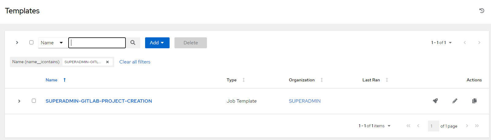Figure 1. Gitlab Project Creation Job Template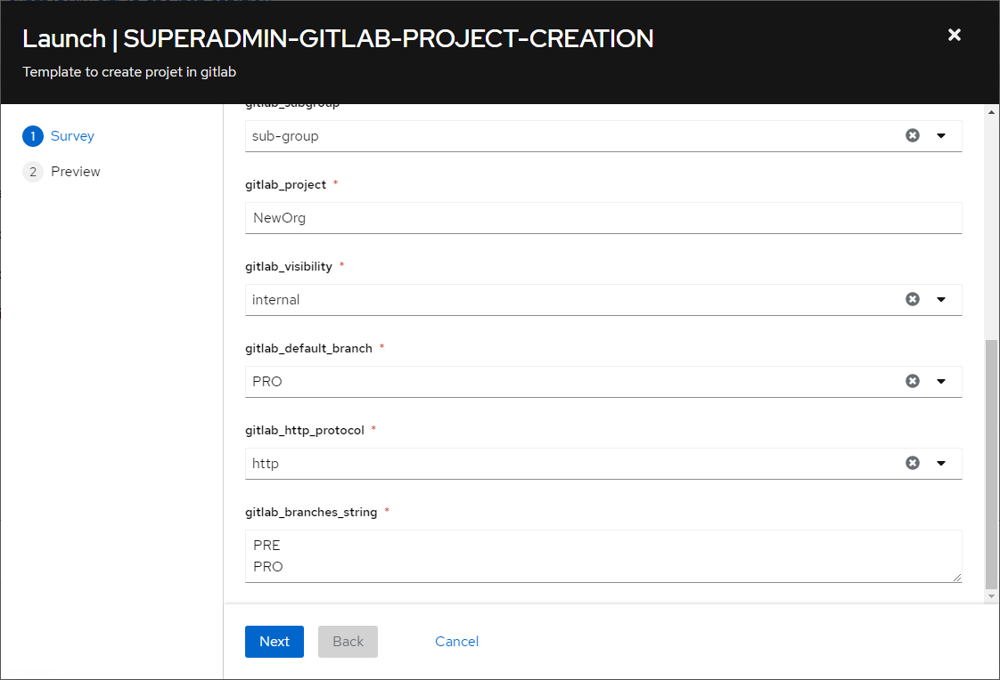Figure 2. Gitlab Project Creation Launch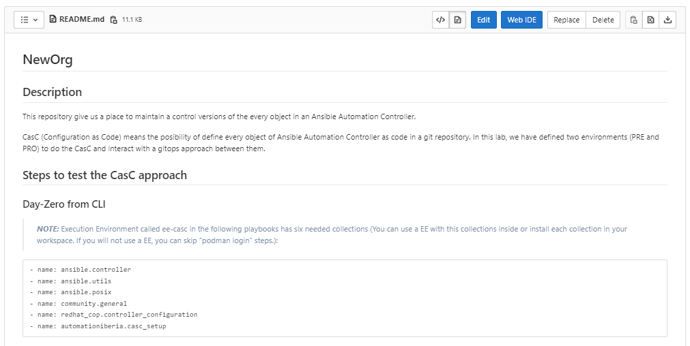Figure 3. Gitlab Project Creation README Snap -
Run the Job Template to create the CasC Webhook for the newly created organization
The same way the CasC is triggered for the SUPERADMIN organization, for the newly created one a webhook must be created as well. That one is slightly different on how the playbook treats the input information, but is running the same overall process to launch the CasC processes.
The configuration is almost the same shown at the previous section: Configure the GitLab Webhooks, but the organization name and the Job Template that is executed from the webhook, will be different:
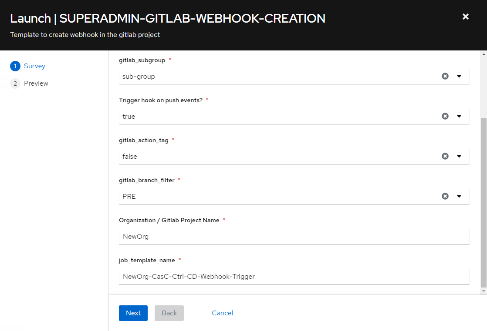Figure 4. Configure Webhook for the ${SUPERADMIN_ORG} Organization -
Create the Webhook for the
PROworkflow following the steps described at Configure the GitLab Webhooks for the Pro environment.